|
Thailand, Phuket, 1999-01
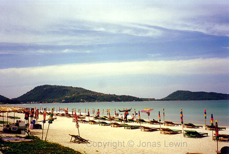In January -99, I took a trip over to Phuket in Thailand. When leaving the
airplane, the heat in the air struck you immediately. And that is my first
impression of Thailand. Hot. To give you a view of how hot, then imagine
yourself entering your parked car in the summer, and it has been standing in
the sun for 3 hours. Now instead of having the doors open, and the fans on
maximum cooling - close the doors and turn on the heat in the car. After a
while, you get the feeling. The only difference is that the heat in Thailand
is bearable, since the air is very humid.
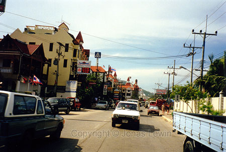My second impression is that the people are very friendly. And the
friendliness is not fake like in the US. This friendliness is genuine. If
you or they make a fool of yourself, it's always followed by laughter from
their side to show you that making a fool of your self is part of life, and
that you should enjoy life. This is also reflected in their driving. They
don’t have any other rule but this: largest goes first. They don't seem to
have any hurry in the traffic (except the Europeans that rents cars). The
important thing for them is getting there, and not risking their life for 2
minutes. Sure the roads are packed, but no-one is looking angry in the
traffic. After getting used to the first shocking encounter with the
traffic, you feel quite safe, even though you're not wearing any seatbelt.
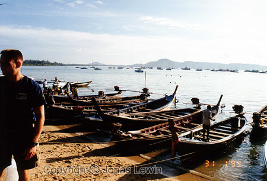The scenery is the greatest that I've seen. Cliffs going straight into the
water, or a small mountainside gently descending into the water. Tanzania
was great with its great open field, but this is breathtaking. Makes me feel
like I want to swim over, and climb the mountainside all the way. The only
thing that is destroying the view of this great scenery when driving is the
horrible high-voltage lines arranged along the road. Otherwise I could have
close to a hundred more great scenery pictures. The reason I like mountains
is probably because that I don't have any mountains close to where I live.
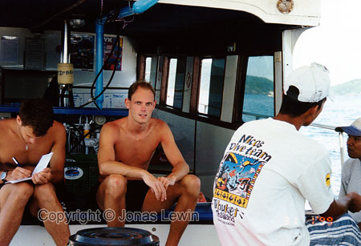I was also scuba diving in Thailand. I just wanted to try it and see if this
was for me. So I signed up for PADI open water certificate. After the
theory, it was time to try diving in the swimming pool. After that it was
time to try the real thing. I felt very unsure about myself here, but after
the fist few dives it was easier to regulate the air in the vest, so I would
not go up and down like a roller coaster. After getting the certificate, I
felt I needed more training on this (especially since I ran out of air on
one dive, but I was close to the surfaces so it was just to swim up to the
surface) so why not sign up for the PADI advanced open water certificate.
This would expand my knowledge, and give me some more training.
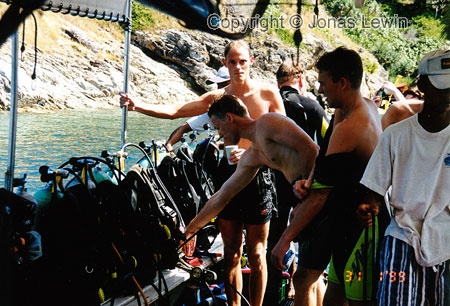
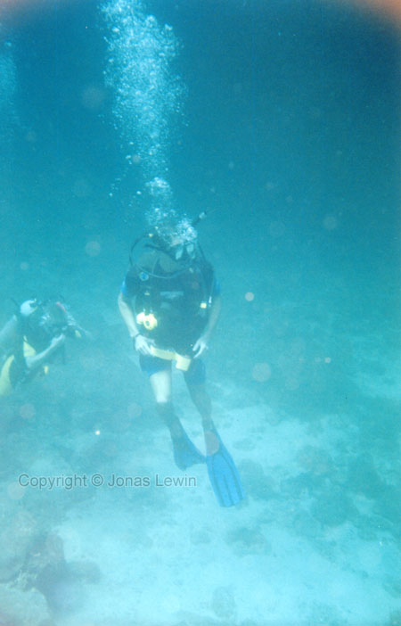The picture of me on my way down to the bottom is copyright Martin Myhre.
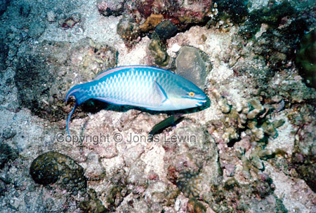I got the opportunity to take underwater photos, and man - is that hard or
what. Here are my best shots, but I still don’t think that they come close
the photos from the Serengeti. At least I got the practice I needed, and now
I feel more sure with myself, in the aspect of diving.
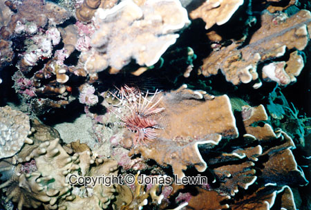
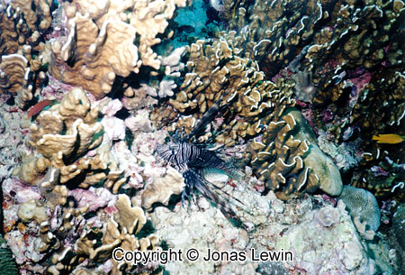
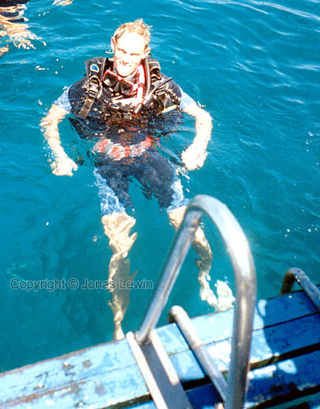It's a long way from riding your bike, which is about 100 times faster. You
don't swim much more than 2 km/h to save air/energy, and to have time to see
all the interesting animal and plant-life under the surface.
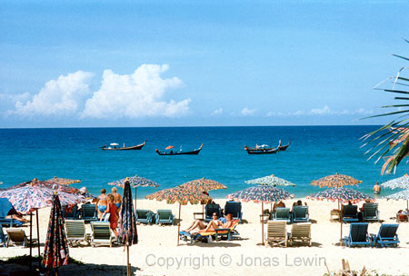This is one place that I can recommend to go on vacation if you like heavy
exploited tourist sites, and then you should go to many of the tours that I
didn't go to. The pirate-copied wristwatches and clothes are very cheap and
have a fair quality (I haven't found anything to complain about).
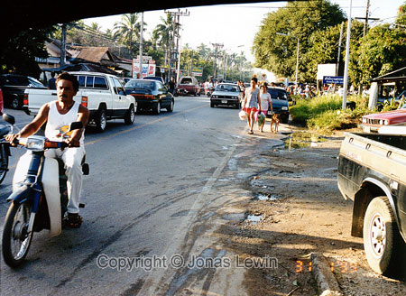
|